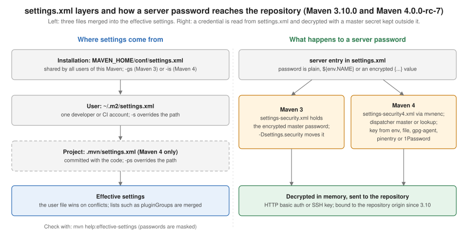

Maven: settings.xml & Password Encryption
|
This content was generated with the assistance of AI and should be verified against the official documentation before being relied on in production. |
This page is written against Apache Maven 3.10.0 (released on 27 September 2026), with Maven 3.9.16 and Maven 4.0.0-rc-7 (a release
candidate) run wherever they differ. Every example marked as run was executed on JDK 26 on 2026-10-16, on macOS (Apple silicon),
in a scratch directory that this page calls <lab>. Output that comes from a run is shown as printed, except that the scratch path
is shortened to <lab>, that lines are removed with grep where the text says so, and that the byte counts of uploads are cut.
Anything that could not be run here (SSH keys, a real corporate proxy, a hardware vault, GnuPG and 1Password as master key sources) is
labelled "not run here". All passwords on this page are throwaway placeholders such as changeit-example; the encrypted values
shown were produced from those placeholders and from placeholder master passwords.
settings.xml is where Maven keeps what must not travel with the project: who you are to a repository, which repository to ask
instead of Central, how to get out through a proxy, where the local repository is. The first half of this page walks through every
element and shows what Maven does with it. The second half is about the one element people most want to hide, the password, and
about the two encryption systems: the Maven 3 master password, which Maven 3.10 still uses, and the redone system of Maven 4,
the mvnenc tool. The POM is on
POM Fundamentals; the settings of Maven itself (MAVEN_OPTS, .mvn)
on Configuring Maven; the repositories that mirrors and servers
refer to on
Repositories, Mirrors & Repository Managers.
The running scenario is described on the section landing page.

What belongs in settings.xml and what in the POM
The official page defines the file by what it leaves out: it holds values that configure Maven execution, "like the pom.xml, but should not be bundled to any specific project, or distributed to an audience". The practical test is whether two developers building the same commit should get the same answer.
| Question | Goes in the POM | Goes in settings.xml |
|---|---|---|
Which repositories does the project need? |
|
The credentials for that id ( |
Which dependencies and plugins? |
|
Nothing; only |
Where is the local repository? |
Never |
|
Who am I? |
Never |
|
What changes between machines? |
Profiles in the POM must be portable |
Profiles in |
The link between the two files is always an identifier: the <id> of a repository in the POM is the <id> of a <server>
in the settings, and the <id> of a <mirror> is also looked up among the servers. Getting these ids to agree is most of
the work, and most of the failures, below.
Where the files live and how they merge
| Level | Default location | Option to override | Release |
|---|---|---|---|
Installation (global) |
|
|
All |
User |
|
|
All |
Project |
|
|
Maven 4 only |
If several exist, they are merged and the more specific one wins on conflicts: user over installation, and in Maven 4 project
over user. The installation file is shipped with the distribution as a template full of comments; the official advice is to copy
it to ~/.m2 and edit that copy rather than the installation, so that upgrading Maven does not lose the edits.
The best way to see the result is the Help plugin’s effective-settings goal. The next run merges two files with -gs and -s
(Maven 3.10.0; -B is the batch mode, which is why interactiveMode shows as false):
<settings xmlns="http://maven.apache.org/SETTINGS/1.3.0">
<localRepository>/opt/ci/shared-repo</localRepository>
<offline>true</offline>
<pluginGroups>
<pluginGroup>org.eclipse.jetty</pluginGroup>
</pluginGroups>
</settings><settings xmlns="http://maven.apache.org/SETTINGS/1.3.0">
<localRepository><lab>/m2</localRepository>
<pluginGroups>
<pluginGroup>org.jacoco</pluginGroup>
</pluginGroups>
</settings>mvn -B -N -gs global-settings.xml -s user-settings.xml help:effective-settings<settings ...>
<localRepository><lab>/m2</localRepository>
<interactiveMode>false</interactiveMode>
<pluginGroups>
<pluginGroup>org.jacoco</pluginGroup>
<pluginGroup>org.eclipse.jetty</pluginGroup>
<pluginGroup>org.apache.maven.plugins</pluginGroup>
<pluginGroup>org.codehaus.mojo</pluginGroup>
</pluginGroups>
</settings>The localRepository is the user’s, as the user file is dominant; the lists were merged, with the user’s pluginGroup first and
the two built-in groups added at the end. Lists of servers, mirrors, proxies and profiles merge the same way, by <id>.
One element did not behave as the sentence "their contents get merged" suggests. A global file that says <offline>true</offline>
had no effect in any of my runs, whether the user file was silent or absent, while the same line in the user file did. The run
asks Maven for the value of settings.offline with the Help plugin’s evaluate goal:
mvn -q -B -N -gs global-offline.xml -s empty.xml org.apache.maven.plugins:maven-help-plugin:3.5.2:evaluate \
-Dexpression=settings.offline -DforceStdout
mvn -q -B -N -gs empty.xml -s user-offline-true.xml org.apache.maven.plugins:maven-help-plugin:3.5.2:evaluate \
-Dexpression=settings.offline -DforceStdout| Maven | offline only in the global file |
offline only in the user file |
|---|---|---|
3.9.16 |
|
|
3.10.0 |
|
|
4.0.0-rc-7 |
|
|
A build that must be offline everywhere therefore sets it in the user file (or passes -o), not in the installation. The
shipped installation file contributes more than a template. With an empty user file (<settings/>) and -Dmaven.repo.local pointing at the
scratch repository, Maven 3.10.0 reports this, where the mirror is the HTTP blocker described below and comes from the installation file, because the -gs run above, which
replaced that file, shows no mirror at all:
<settings ...>
<localRepository><lab>/m2</localRepository>
<interactiveMode>false</interactiveMode>
<mirrors>
<mirror>
<mirrorOf>external:http:*</mirrorOf>
<name>Pseudo repository to mirror external repositories initially using HTTP.</name>
<url>http://0.0.0.0/</url>
<blocked>true</blocked>
<id>maven-default-http-blocker</id>
</mirror>
</mirrors>
<pluginGroups>
<pluginGroup>org.apache.maven.plugins</pluginGroup>
<pluginGroup>org.codehaus.mojo</pluginGroup>
</pluginGroups>
</settings>Maven 4 adds the project level. A .mvn/settings.xml next to the POM is read by 4.0.0-rc-7 and ignored by 3.10.0 (the Help
plugin shows the pluginGroup that the file declares):
.mvn/settings.xml<settings xmlns="http://maven.apache.org/SETTINGS/1.3.0">
<pluginGroups>
<pluginGroup>io.tidepool.plugins</pluginGroup>
</pluginGroups>
</settings>Maven 4.0.0-rc-7:
<pluginGroup>io.tidepool.plugins</pluginGroup>
<pluginGroup>org.apache.maven.plugins</pluginGroup>
<pluginGroup>org.codehaus.mojo</pluginGroup>
Maven 3.10.0:
<pluginGroup>org.apache.maven.plugins</pluginGroup>
<pluginGroup>org.codehaus.mojo</pluginGroup>The project file is committed with the code, so it can carry a pluginGroup or a mirror that everybody should share, and must never
carry a credential. Maven 4’s installation file uses the namespace http://maven.apache.org/SETTINGS/2.0.0 and also lists the Central
repositories; Maven 3.10’s uses 1.2.0, and the reference page of 3.10 documents 1.3.0, the schema that has aliases and
repositoryOrigins. Maven 3.9.16 reads a 1.3.0 file without complaint.
Source: Maven 3.10.0: Settings reference
The top-level elements
| Element | What it does | Section |
|---|---|---|
|
Simple values |
|
|
Extra group ids searched for short plugin prefixes |
|
|
Credentials and transport settings, by id |
|
|
Replace a repository by another URL |
|
|
Get out through a proxy |
|
|
Properties and repositories that apply under conditions |
Simple values
localRepository is the path of the local repository. The default is ${user.home}/.m2/repository; the official page points out
that it is useful on a build server where all logged-in users should share one repository, and the guide says the path must be absolute. The
choices and maven.repo.local are on
Configuring Maven.
interactiveMode is true by default and says whether Maven may ask the user for input. -B (batch mode) forces it off, which
is why every run on this page that uses -B reports false. It matters to the plugins that prompt, such as the Archetype plugin.
offline makes Maven work from the local repository only. With a fresh local repository and <offline>true</offline> in the user file, Maven
3.10.0 stops at the first thing it needs:
mvn -B -N -s user-offline-fresh.xml help:effective-settings[ERROR] BUILD FAILUREusePluginRegistry is a leftover: the plugin registry no longer exists, and the options -npr, -npu and -cpu are printed by
Maven 3.10 as "Ineffective, only kept for backward compatibility". Do not set it.
pluginGroups
When a command line names a plugin by prefix (mvn jacoco:report), Maven looks the prefix up in the plugin groups. The list always
contains org.apache.maven.plugins and org.codehaus.mojo; <pluginGroups> adds more. The JaCoCo plugin is in neither group, so
without the setting the prefix is unknown, and with it the prefix resolves (Maven 3.10.0, lines removed with grep):
<settings xmlns="http://maven.apache.org/SETTINGS/1.3.0">
<pluginGroups>
<pluginGroup>org.jacoco</pluginGroup>
</pluginGroups>
</settings>mvn -B -N -s server-none.xml jacoco:help
mvn -B -N -s plugingroups.xml jacoco:help[ERROR] No plugin found for prefix 'jacoco' in the current project and in the plugin groups [org.apache.maven.plugins, org.codehaus.mojo] available from the repositories [local (<lab>/m2), central (https://repo.maven.apache.org/maven2)] -> [Help 1]
[INFO] --- jacoco:0.8.15:help (default-cli) @ tidepool-parent ---
[INFO] BUILD SUCCESSThe setting is for plugins whose group you do not want to type on a command line. A POM or a CI script can avoid the whole mechanism by naming the plugin in full, which is the better choice for a shared build, because the setting is on one machine only. See Plugins & Their Configuration.
Servers
A <server> carries what a repository needs to know about you. Its <id> is the key: it must equal the <id> of the repository (in
<repositories>, <pluginRepositories>, <distributionManagement>) or of the mirror that Maven talks to. It is not the user’s id.
| Element | Meaning |
|---|---|
|
The id of the repository or mirror these settings are for. |
|
A pair for HTTP basic authentication. The password may be encrypted (below). |
|
A pair for SSH: the path of the key (the default, from the official page, is |
|
Three-digit permissions for files and directories created on deployment, such as |
|
Free-form settings for the transport, such as HTTP headers and timeouts. |
|
Other ids that use the same entry (Maven 3.10 and 4). |
|
Origins the credentials may be sent to (Maven 3.10). |
A repository to test against
Credentials cannot be demonstrated without something that asks for them. The runs below use a few lines of Python as a repository
that requires authentication and logs what it received: GET and PUT of files under a directory, answering 401 unless the
Authorization header is Basic with a known user or the exact bearer token example-token.
python3 authrepo.py 18081#!/usr/bin/env python3
"""Tiny Basic-auth file repository for the examples: GET and PUT under ./repo."""
import base64, os, sys
from http.server import BaseHTTPRequestHandler, HTTPServer
USERS = {"deployer": "changeit-example", "braces": "pa{ss}word-example"}
ROOT = os.path.join(os.path.dirname(os.path.abspath(__file__)), "repo")
LOG = os.path.join(os.path.dirname(os.path.abspath(__file__)), "requests.log")
class Handler(BaseHTTPRequestHandler):
def log_message(self, *a):
pass
def authorised(self):
header = self.headers.get("Authorization", "")
who = "-"
ok = False
if header == "Bearer example-token":
who, ok = "token", True
elif header.startswith("Basic "):
user, _, pw = base64.b64decode(header[6:]).decode().partition(":")
who = user
ok = USERS.get(user) == pw
with open(LOG, "a") as f:
f.write("%s %s user=%s %s\n" % (self.command, self.path, who, "ok" if ok else "DENIED"))
if not ok:
self.send_response(401)
self.send_header("WWW-Authenticate", 'Basic realm="tidepool"')
self.send_header("Content-Length", "0")
self.end_headers()
return ok
def do_GET(self):
if not self.authorised():
return
path = os.path.join(ROOT, self.path.lstrip("/"))
if os.path.isfile(path):
data = open(path, "rb").read()
self.send_response(200)
self.send_header("Content-Length", str(len(data)))
self.end_headers()
self.wfile.write(data)
else:
self.send_response(404)
self.send_header("Content-Length", "0")
self.end_headers()
def do_HEAD(self):
self.do_GET()
def do_PUT(self):
length = int(self.headers.get("Content-Length", 0))
body = self.rfile.read(length)
if not self.authorised():
return
path = os.path.join(ROOT, self.path.lstrip("/"))
os.makedirs(os.path.dirname(path), exist_ok=True)
open(path, "wb").write(body)
self.send_response(201)
self.send_header("Content-Length", "0")
self.end_headers()
HTTPServer(("127.0.0.1", int(sys.argv[1])), Handler).serve_forever()The script is this page’s own lab setup, not an example from the Maven documentation. To publish to it, and to resolve from it,
the examples use the Deploy plugin’s deploy-file goal on a one-file JAR, and a consumer that depends on it. (-Dmaven.repo.local points at a scratch local repository and is omitted from the commands shown.)
deploy() {
mvn -B -N -s "$1" "${@:2}" deploy:deploy-file -Dfile=tidepool-tools-1.0.0.jar \
-DgroupId=io.tidepool -DartifactId=tidepool-tools -Dversion=1.0.0 -Dpackaging=jar \
-Durl=http://localhost:18081/ -DrepositoryId=tidepool-internal
}Username and password
First without any <server>, then with one whose id is the -DrepositoryId. The server’s log shows what arrived. The Maven output is cut with grep to
the lines that matter, and the long goal prefix of the error is as printed:
server-none.xml<settings xmlns="http://maven.apache.org/SETTINGS/1.3.0"/>server-plain.xml<settings xmlns="http://maven.apache.org/SETTINGS/1.3.0">
<servers>
<server>
<id>tidepool-internal</id>
<username>deployer</username>
<password>changeit-example</password>
</server>
</servers>
</settings>deploy server-none.xml[ERROR] BUILD FAILURE
[ERROR] Failed to execute goal org.apache.maven.plugins:maven-deploy-plugin:3.2.0:deploy-file (default-cli) on project tidepool-parent: Failed to deploy artifacts: Could not transfer artifact io.tidepool:tidepool-tools:jar:1.0.0 from/to tidepool-internal (http://localhost:18081/): HTTP Status: 401The repository’s log for that run:
PUT /io/tidepool/tidepool-tools/1.0.0/tidepool-tools-1.0.0.jar user=- DENIED
PUT /io/tidepool/tidepool-tools/1.0.0/tidepool-tools-1.0.0.pom user=- DENIEDWith the entry (Maven 3.10.0; the warning is explained under "Where the credentials are sent" below):
deploy server-plain.xml[WARNING] Using credentials of server 'tidepool-internal' for repository http://localhost:18081/, although no repository or mirror with this id is declared in settings or on the command line and the server declares no <repositoryOrigins>. Declare 'http://localhost:18081' in <repositoryOrigins> of that server in settings to bind these credentials explicitly, or set maven.repository.credentialScope=strict to refuse such credential use.
[INFO] Uploaded to tidepool-internal: http://localhost:18081/io/tidepool/tidepool-tools/1.0.0/tidepool-tools-1.0.0.jar
[INFO] Uploaded to tidepool-internal: http://localhost:18081/io/tidepool/tidepool-tools/1.0.0/tidepool-tools-1.0.0.pom
[INFO] Uploaded to tidepool-internal: http://localhost:18081/io/tidepool/tidepool-tools/maven-metadata.xml
[INFO] BUILD SUCCESSPUT /io/tidepool/tidepool-tools/1.0.0/tidepool-tools-1.0.0.jar user=deployer ok
PUT /io/tidepool/tidepool-tools/1.0.0/tidepool-tools-1.0.0.jar.sha1 user=deployer ok
PUT /io/tidepool/tidepool-tools/1.0.0/tidepool-tools-1.0.0.jar.md5 user=deployer okAn HTTP 401 means no credentials were sent or they were wrong; on this page it appeared in every failure of this kind, and it is
the same message for a missing entry, a wrong id, a wrong password and, as seen below, a password that could not be decrypted. The way to tell which
is -X and the log of the repository.
Aliases: one entry for several ids
Maven 3.10 added <aliases>: for each alias an additional server is generated with the same configuration and the alias as id. That
is the way to use one set of credentials for tidepool-internal and for tidepool-staging without copying the entry. The next run uses a
settings file that activates a profile with a repository called tidepool-staging and a single server called tidepool-internal
with the alias, against the same repository, on the three versions:
<settings xmlns="http://maven.apache.org/SETTINGS/1.3.0">
<servers>
<server>
<id>tidepool-internal</id>
<username>deployer</username>
<password>${env.TIDEPOOL_PASSWORD}</password>
<aliases>
<alias>tidepool-staging</alias>
</aliases>
</server>
</servers>
<profiles>
<profile>
<id>staging</id>
<repositories>
<repository>
<id>tidepool-staging</id>
<url>http://localhost:18081/</url>
<snapshots><enabled>false</enabled></snapshots>
</repository>
</repositories>
</profile>
</profiles>
<activeProfiles>
<activeProfile>staging</activeProfile>
</activeProfiles>
</settings>Maven 3.10.0:
[INFO] Downloaded from tidepool-staging: http://localhost:18081/io/tidepool/tidepool-tools/1.0.0/tidepool-tools-1.0.0.jar
[INFO] io.tidepool:tidepool-tools:jar:1.0.0:compile -- module tidepool.tools (auto)
[INFO] BUILD SUCCESS
repository log, requests accepted with credentials: 5
Maven 3.9.16:
[INFO] BUILD FAILURE
[ERROR] Failed to read artifact descriptor for io.tidepool:tidepool-tools:jar:1.0.0
[ERROR] Caused by: The following artifacts could not be resolved: io.tidepool:tidepool-tools:pom:1.0.0 (absent): Could not transfer artifact io.tidepool:tidepool-tools:pom:1.0.0 from/to tidepool-staging (http://localhost:18081/): status code: 401, reason phrase: Unauthorized (401)
repository log, requests accepted with credentials: 0
Maven 4.0.0-rc-7:
[INFO] Downloaded from tidepool-staging: http://localhost:18081/io/tidepool/tidepool-tools/1.0.0/tidepool-tools-1.0.0.jar
[INFO] io.tidepool:tidepool-tools:jar:1.0.0:compile -- module tidepool.tools (auto)
[INFO] BUILD SUCCESS
repository log, requests accepted with credentials: 5Maven 3.9.16 does not fail on the unknown element: it ignores it, so the repository is asked without credentials and answers 401. A file that relies on aliases works on 3.10 and 4 and fails on 3.9, which a team with mixed versions has to know.
Where the credentials are sent: repositoryOrigins and credentialScope
The warning in the earlier run is part of the security hardening of Maven 3.10: according to the release notes, the credentials of a server are
scoped to the origin (scheme, host and port) of the repositories and mirrors declared with the same id in settings or on the
command line, and the id is matched exactly, so that an entry no longer leaks to unrelated repositories that share an id prefix. In
the deploy-file run there is no such repository (the URL is given with -Durl), so Maven warns and uses the credentials anyway. The property
maven.repository.credentialScope=strict turns the warning into a refusal:
deploy server-plain.xml -Dmaven.repository.credentialScope=strict[WARNING] Not using credentials of server 'tidepool-internal' for repository http://localhost:18081/: no repository or mirror with this id is declared in settings or on the command line and the server declares no <repositoryOrigins>, and maven.repository.credentialScope=strict is in effect. Declare 'http://localhost:18081' in <repositoryOrigins> of that server in settings to allow it.
[ERROR] BUILD FAILURE
[ERROR] Failed to execute goal org.apache.maven.plugins:maven-deploy-plugin:3.2.0:deploy-file (default-cli) on project tidepool-parent: Failed to deploy artifacts: Could not transfer artifact io.tidepool:tidepool-tools:jar:1.0.0 from/to tidepool-internal (http://localhost:18081/): HTTP Status: 401The fix suggested in the message is <repositoryOrigins>, an origin (not a full URL) the credentials may be used for. The origins
are added to the ones Maven derives; nothing is replaced. They are needed when the repository is not known when the session is created, such as one that a settings profile
declares and that is activated afterwards:
<settings xmlns="http://maven.apache.org/SETTINGS/1.3.0">
<servers>
<server>
<id>tidepool-internal</id>
<username>deployer</username>
<password>changeit-example</password>
<repositoryOrigins>
<repositoryOrigin>http://localhost:18081</repositoryOrigin>
</repositoryOrigins>
</server>
</servers>
</settings>deploy server-origins.xml -Dmaven.repository.credentialScope=strict[INFO] Uploaded to tidepool-internal: http://localhost:18081/io/tidepool/tidepool-tools/1.0.0/tidepool-tools-1.0.0.jar
[INFO] Uploaded to tidepool-internal: http://localhost:18081/io/tidepool/tidepool-tools/1.0.0/tidepool-tools-1.0.0.pom
[INFO] Uploaded to tidepool-internal: http://localhost:18081/io/tidepool/tidepool-tools/maven-metadata.xml
[INFO] BUILD SUCCESSMaven 4.0.0-rc-7 has the warning and the strict value too, with a shorter text, but in this run it did not honour <repositoryOrigins>:
the same strict run with the same file failed there.
Maven 4.0.0-rc-7, default scope:
[WARNING] Using credentials of server 'tidepool-internal' for repository http://localhost:18081/, although no repository or mirror with this id is declared in settings or on the command line. Set maven.repository.credentialScope=strict to refuse such credential use.
[INFO] Uploaded to tidepool-internal: http://localhost:18081/io/tidepool/tidepool-tools/1.0.0/tidepool-tools-1.0.0.jar
[INFO] Uploaded to tidepool-internal: http://localhost:18081/io/tidepool/tidepool-tools/1.0.0/tidepool-tools-1.0.0.pom
[INFO] Uploaded to tidepool-internal: http://localhost:18081/io/tidepool/tidepool-tools/maven-metadata.xml
[INFO] BUILD SUCCESS
Maven 4.0.0-rc-7, strict, with repositoryOrigins in the server:
[WARNING] Not using credentials of server 'tidepool-internal' for repository http://localhost:18081/: no repository or mirror with this id is declared in settings or on the command line, and maven.repository.credentialScope=strict is in effect.
[ERROR] BUILD FAILURE
[ERROR] Failed to execute goal org.apache.maven.plugins:maven-deploy-plugin:3.2.0:deploy-file (default-cli) on project tidepool-parent: Failed to deploy artifacts: Could not transfer artifact io.tidepool:tidepool-tools:jar:1.0.0 from/to tidepool-internal (http://localhost:18081/): HTTP Status: 401Maven 3.9.16 prints no warning and sends the credentials. I did not reproduce the leak that the release notes describe (a repository that shares an id prefix with a server) and quote it from them.
Configuration: headers and timeouts
<configuration> is handed to the transport. The page on the Resolver transport shows custom HTTP headers for all HTTP transports,
and that is how a token is sent to a repository manager that takes Authorization: Bearer instead of basic authentication. The test
repository accepts that header; no <username> is involved:
<settings xmlns="http://maven.apache.org/SETTINGS/1.3.0">
<servers>
<server>
<id>tidepool-internal</id>
<configuration>
<httpHeaders>
<property>
<name>Authorization</name>
<value>Bearer example-token</value>
</property>
</httpHeaders>
</configuration>
</server>
</servers>
</settings>Maven 3.10.0:
[INFO] Uploaded to tidepool-internal: http://localhost:18081/io/tidepool/tidepool-tools/1.0.0/tidepool-tools-1.0.0.jar
[INFO] Uploaded to tidepool-internal: http://localhost:18081/io/tidepool/tidepool-tools/1.0.0/tidepool-tools-1.0.0.pom
[INFO] Uploaded to tidepool-internal: http://localhost:18081/io/tidepool/tidepool-tools/maven-metadata.xml
[INFO] BUILD SUCCESS
Maven 4.0.0-rc-7:
[INFO] Uploaded to tidepool-internal: http://localhost:18081/io/tidepool/tidepool-tools/1.0.0/tidepool-tools-1.0.0.jar
[INFO] Uploaded to tidepool-internal: http://localhost:18081/io/tidepool/tidepool-tools/1.0.0/tidepool-tools-1.0.0.pom
[INFO] Uploaded to tidepool-internal: http://localhost:18081/io/tidepool/tidepool-tools/maven-metadata.xml
[INFO] BUILD SUCCESSThe repository’s log shows user=token ok for the uploads of both runs. Timeouts are also set through <configuration>; the key
names depend on the transport (the native HTTP transport is the default since Maven 3.9.0, the Wagon one is the alternative) and are
in the transport guide. Not run here.
Mirrors
A mirror replaces a repository by another URL: a company’s repository manager, a regional copy of Central. The semantics are on Repositories, Mirrors & Repository Managers; the elements are:
| Element | Meaning | Since |
|---|---|---|
|
Identifier and label. The |
|
|
The base URL used instead of the repository’s. |
|
|
The ids to replace: |
|
|
Layout of the mirror and the layouts it mirrors ( |
Maven 3 |
|
Fail any download that would go through this mirror, explaining why. |
3.8.0 |
The default HTTP blocker
The installation file ships a blocking mirror, shown in the earlier output: maven-default-http-blocker, mirrorOf external:http:*, url
http://0.0.0.0/, blocked true. A repository that is reached over plain HTTP and is not on the local machine is therefore refused. A
consumer whose POM declares a repository at http://repo.tidepool.example/maven fails with the explanation in the message
(Maven 3.10.0, only the cause is kept):
mvn -B -s empty-settings.xml dependency:resolve[ERROR] Caused by: The following artifacts could not be resolved: io.tidepool:tidepool-tools:pom:1.0.0 (absent): Could not transfer artifact io.tidepool:tidepool-tools:pom:1.0.0 from/to maven-default-http-blocker (http://0.0.0.0/): Blocked mirror for repositories: [tidepool-internal (http://repo.tidepool.example/maven, default, releases)]The blocker is part of the installation file, not of Maven’s code: the earlier -gs run, which replaced that file, had no mirror. A team
that keeps its own installation file must carry the mirror over; the fix for the build above is HTTPS, or a more specific mirror of that
repository id.
Credentials of a mirror, and the star
A mirror is looked up among the servers by its own id. Here a * mirror points everything at the test repository, and a server with
the same id carries the credentials:
<settings xmlns="http://maven.apache.org/SETTINGS/1.3.0">
<mirrors>
<mirror>
<id>tidepool-internal</id>
<name>Internal repository for everything under tidepool.example</name>
<url>http://localhost:18081/</url>
<mirrorOf>*</mirrorOf>
</mirror>
</mirrors>
<servers>
<server>
<id>tidepool-internal</id>
<username>deployer</username>
<password>${env.TIDEPOOL_PASSWORD}</password>
</server>
</servers>
</settings>[ERROR] No plugin found for prefix 'dependency' in the current project and in the plugin groups [org.apache.maven.plugins, org.codehaus.mojo] available from the repositories [local (<lab>/m2c), tidepool-internal (http://localhost:18081/)] -> [Help 1]The repository’s log starts with a request for a plugin that is not in it, first without and then with the credentials of the mirror’s server:
GET /org/apache/maven/plugins/maven-clean-plugin/3.5.0/maven-clean-plugin-3.5.0.pom user=- DENIED
GET /org/apache/maven/plugins/maven-clean-plugin/3.5.0/maven-clean-plugin-3.5.0.pom user=deployer okSo * sends plugin downloads to the mirror too, and a mirror that holds only internal artifacts cannot answer for them: the repository manager must proxy Central, or mirrorOf must list only the ids the mirror really serves. The error text above is the usual symptom of this mistake.
Source: Maven guide: Mirror settings
Proxies
A <proxy> describes a proxy server. Only one proxy may be active at a time.
| Element | Meaning |
|---|---|
|
Identifier. |
|
|
|
The proxy as |
|
Credentials for the proxy itself. The password can be encrypted like a server password (not run here). |
|
The hosts that are not proxied, delimited by |
The next two settings differ only in nonProxyHosts. The proxy is an address where nothing listens, and the repository is the local one, so
the first build must fail connecting to the proxy and the second must bypass it. To keep the plugins out of the test they were
resolved beforehand into the local repository (Maven 3.10.0):
<proxy>
<id>office</id>
<active>true</active>
<protocol>http</protocol>
<host>127.0.0.1</host>
<port>18099</port>
<nonProxyHosts>*.tidepool.example</nonProxyHosts> <!-- proxy-direct.xml -->
<!-- proxy-bypass.xml: <nonProxyHosts>localhost|*.tidepool.example</nonProxyHosts> -->
</proxy>proxy-direct.xml (nonProxyHosts without localhost):
[ERROR] BUILD FAILURE
[ERROR] Failed to read artifact descriptor for io.tidepool:tidepool-tools:jar:1.0.0
[ERROR] Caused by: The following artifacts could not be resolved: io.tidepool:tidepool-tools:pom:1.0.0 (absent): Could not transfer artifact io.tidepool:tidepool-tools:pom:1.0.0 from/to tidepool-internal (http://localhost:18081/): Connect to 127.0.0.1:18099 [/127.0.0.1] failed: Connection refused
proxy-bypass.xml (nonProxyHosts with localhost):
[INFO] io.tidepool:tidepool-tools:jar:1.0.0:compile -- module tidepool.tools (auto)
[INFO] BUILD SUCCESSThe error names the proxy, not the repository, which is how to recognise a missing nonProxyHosts entry. The credentials of the repository are
unaffected. A real authenticating proxy, and the system properties https.proxyHost and http.proxyHost, are not run here.
Profiles and activeProfiles
A profile in settings.xml is a reduced profile: activation, repositories, pluginRepositories and properties, nothing else, because the file describes the
build system and not a project. The activation conditions are the same as in the POM: activeByDefault, jdk, os, property,
file (see Profiles), and a profile can also be named in
<activeProfiles> or on the command line with -P. A profile that is active from the settings overrides a profile of the same id in the POM.
Two settings profiles, one activated by <activeProfiles> and one by the JDK, and a reference to a profile that does not exist
(Maven 3.10.0):
<settings xmlns="http://maven.apache.org/SETTINGS/1.3.0">
<profiles>
<profile>
<id>internal-repo</id>
<properties>
<tidepool.repo.url>http://localhost:18081/</tidepool.repo.url>
</properties>
<repositories>
<repository>
<id>tidepool-internal</id>
<url>http://localhost:18081/</url>
<releases><enabled>true</enabled><updatePolicy>never</updatePolicy></releases>
<snapshots><enabled>false</enabled></snapshots>
</repository>
</repositories>
</profile>
<profile>
<id>on-jdk-26</id>
<activation>
<jdk>26</jdk>
</activation>
<properties>
<tidepool.jdk.note>built on JDK 26</tidepool.jdk.note>
</properties>
</profile>
</profiles>
<activeProfiles>
<activeProfile>internal-repo</activeProfile>
<activeProfile>no-such-profile</activeProfile>
</activeProfiles>
</settings>mvn -B -N -s profiles.xml help:active-profiles
mvn -B -N -s profiles.xml -P '!internal-repo' help:active-profilesActive Profiles for Project 'io.tidepool:tidepool-parent:pom:1.0.0':
The following profiles are active:
- internal-repo (source: external)
- on-jdk-26 (source: external)The following profiles are active:
- on-jdk-26 (source: external)The profiles are reported with source: external, which is how Maven names the settings. The unknown no-such-profile is silent, as the official page says
("If no matching profile is found nothing will happen"). The properties of the profile are visible to the POM:
${tidepool.repo.url} evaluated to http://localhost:18081/ in the same session (run with the Help plugin’s evaluate goal).
Repositories declared in a settings profile are not part of the project: Maven 4 removes, by default, the repositories that come from an active settings profile from the consumer POM that it publishes (see Maven 4: POM Model & Consumer POM), and a repository that appears only in somebody’s settings is a build that works on one machine. Use settings profiles for what really differs between machines, and put the repositories the project needs in the POM.
Interpolation
The text of settings.xml is interpolated before it is used. The official page lists ${user.home} and every other system property, and
${env.HOME} and the other environment variables, and says that properties defined in profiles of the same file cannot be used.
That makes environment variables the mechanism for keeping secrets out of a committed settings file:
<settings xmlns="http://maven.apache.org/SETTINGS/1.3.0">
<localRepository>${env.TIDEPOOL_REPO}</localRepository>
<servers>
<server>
<id>tidepool-internal</id>
<username>${env.TIDEPOOL_USER}</username>
<password>${env.TIDEPOOL_PASSWORD}</password>
</server>
</servers>
<proxies>
<proxy>
<id>office</id>
<active>true</active>
<protocol>http</protocol>
<host>${env.TIDEPOOL_PROXY_HOST}</host>
<port>${env.TIDEPOOL_PROXY_PORT}</port>
<nonProxyHosts>localhost|*.tidepool.example</nonProxyHosts>
</proxy>
</proxies>
</settings>The release notes of Maven 3.10 announce "full settings.xml interpolation, including non-string values such as ports". The variables
were set to placeholders (the repository, deployer, the password, proxy.tidepool.example and 3128), and the Help plugin printed
the result on the three versions (only the repository and the proxy are shown):
Maven 3.10.0:
<localRepository><lab>/m2</localRepository>
<proxies>
<proxy>
<port>3128</port>
<host>proxy.tidepool.example</host>
<nonProxyHosts>localhost|*.tidepool.example</nonProxyHosts>
<id>office</id>
</proxy>
</proxies>
Maven 3.9.16:
<localRepository><lab>/m2</localRepository>
<proxies>
<proxy>
<port>0</port>
<host>proxy.tidepool.example</host>
<nonProxyHosts>localhost|*.tidepool.example</nonProxyHosts>
<id>office</id>
</proxy>
</proxies>
Maven 4.0.0-rc-7:
<localRepository><lab>/m2</localRepository>
<proxies>
<proxy>
<port>3128</port>
<host>proxy.tidepool.example</host>
<nonProxyHosts>localhost|*.tidepool.example</nonProxyHosts>
<id>office</id>
</proxy>
</proxies>The port is the difference: Maven 3.9.16 cannot turn ${env.TIDEPOOL_PROXY_PORT} into a number and reads 0, while 3.10 and 4
read 3128. The Help plugin masks the password as ***.
Two more observations from the same runs, identical on the three versions. A variable that is not set is not an error: the
text stays as it is, so <username>${env.TIDEPOOL_NOT_SET}</username> is sent as that literal text, and the symptom is a 401 and not a
message about the variable. And a property that comes from a profile of the same file is not available: a <username> of
${tidepool.user} with that property defined in an active settings profile stayed ${tidepool.user}.
Password encryption in Maven 3
A password in settings.xml is readable by everyone who can read the file. Maven 3 offers a first remedy since 2.1.0: passwords (of servers and, by the same mechanism,
proxies) can be stored encrypted with a master password that lives in a second file. The guide states the use case: a shared build machine, some
users allowed to deploy and some not, one settings.xml for all of them, and an extra settings-security.xml in the
home directory of those who may deploy.
The guide is blunt about the strength: the encryption of Maven 3 is "obfuscation-grade", using a single-hash key derivation and no authenticated encryption; it keeps secrets out of logs and screenshots but does not resist an attacker who can read both files. It is not a replacement for a secrets manager (below), and it is the reason Maven 4 has a new tool.
Step 1: the master password
mvn --encrypt-master-password (-emp) encrypts a password of your choice. Since Maven 3.2.1 the argument is optional, and without it
Maven prompts, which keeps the password out of the shell history. The prompt needs a real terminal. The next run drove the prompt
through a pseudo terminal; the typed password (a placeholder) is not echoed:
mvn --encrypt-master-passwordMaster password:
{sLgl3xbdbm4HZ7t/LLEVrsb7XxPm8hWj/lYzSzgS/Hz7O/vq4/bTCJABw8C1PQQ5}Piping the password does not work, and the failure is silent: with the standard input redirected there is no console, and Maven 3.10.0
encrypts an empty password and prints {}.
echo "master-example-1" | mvn --encrypt-master-password{}The password can still be given as an argument (mvn -emp master-example-1), as it was before 3.2.1; it then sits in the history of the
shell. The output differs on every run (the encryption is salted): two runs on the same input printed different values.
The encrypted master password goes into settings-security.xml, by default ~/.m2/settings-security.xml. In the runs the file was
passed with the system property settings.security:
<settingsSecurity>
<master>{aq2p9bg3FKoHLhp/m+10Dr7zkz5aRJxe4BgmFYolIE9JeVW4K0G261Ogj84TgE8q}</master>
</settingsSecurity>The guide says the master password is encrypted with a hardcoded key, so that the file should be treated as if it held the password in plain text. Its protection is the file permissions and, below, keeping it somewhere else.
Step 2: the server password
mvn --encrypt-password (-ep) works the same way and needs the file of step 1:
mvn -Dsettings.security=settings-security.xml --encrypt-passwordPassword:
{qWVsS5y31/8HIWe9nXWcUfRBeh1VkeVGky22FCF7vP6y+bpiEd92rzGXtKEwZy0y}Without the file there is nothing to encrypt with, and the error is the Java exception (Maven 3.10.0, user home shortened):
mvn --encrypt-password changeit-example[ERROR] Error executing Maven.
[ERROR] java.io.FileNotFoundException: ~/.m2/settings-security.xml (No such file or directory)
[ERROR] Caused by: ~/.m2/settings-security.xml (No such file or directory)The value, braces included, replaces the password; the guide adds that text outside the braces is allowed, which makes room for a note about the password’s expiry:
<settings xmlns="http://maven.apache.org/SETTINGS/1.3.0">
<servers>
<server>
<id>tidepool-internal</id>
<username>deployer</username>
<password>{qWVsS5y31/8HIWe9nXWcUfRBeh1VkeVGky22FCF7vP6y+bpiEd92rzGXtKEwZy0y}</password>
</server>
</servers>
</settings>deploy server-encrypted.xml -Dsettings.security=settings-security.xml[INFO] Uploaded to tidepool-internal: http://localhost:18081/io/tidepool/tidepool-tools/1.0.0/tidepool-tools-1.0.0.jar
[INFO] Uploaded to tidepool-internal: http://localhost:18081/io/tidepool/tidepool-tools/1.0.0/tidepool-tools-1.0.0.pom
[INFO] Uploaded to tidepool-internal: http://localhost:18081/io/tidepool/tidepool-tools/maven-metadata.xml
[INFO] BUILD SUCCESSMaven 3.9.16 produced the same success with the same two files.
What goes wrong, and how it looks
The three common failures all end in the same 401 as a wrong password, because a value that cannot be decrypted is
used as it is. The message appears only with -X.
| Situation | Result on Maven 3.10.0 |
|---|---|
|
401; |
The master password in the file is not the one used to encrypt |
401; |
|
401, as for the missing file. |
The first one, with the deploy helper of the lab setup above:
deploy server-encrypted.xml[ERROR] BUILD FAILURE
[ERROR] ...: Failed to deploy artifacts: Could not transfer artifact io.tidepool:tidepool-tools:jar:1.0.0 from/to tidepool-internal (http://localhost:18081/): HTTP Status: 401The repository’s last log line shows the literal braces were sent as the password: PUT /io/tidepool/tidepool-tools/1.0.0/tidepool-tools-1.0.0.pom user=deployer DENIED. The second, with
a settings-security.xml whose master was made from another password, and the debug line of -X:
[ERROR] BUILD FAILURE
[ERROR] ...: Failed to deploy artifacts: Could not transfer artifact io.tidepool:tidepool-tools:jar:1.0.0 from/to tidepool-internal (http://localhost:18081/): HTTP Status: 401
[DEBUG] Failed to decrypt password for server tidepool-internal: org.sonatype.plexus.components.cipher.PlexusCipherException: javax.crypto.BadPaddingException: Given final block not properly padded. Such issues can arise if a bad key is used during decryption.The master password on a removable drive
The guide’s answer to "the file is only as good as its storage" is a relocation. The file in ~/.m2 says where the real one is:
<settingsSecurity>
<relocation>/Volumes/mySecureUsb/secure/settings-security.xml</relocation>
</settingsSecurity>In the runs the "drive" was a directory. With it present the deploy works, and with the directory renamed, as if unplugged, it fails with the same 401:
[INFO] Uploaded to tidepool-internal: http://localhost:18081/io/tidepool/tidepool-tools/1.0.0/tidepool-tools-1.0.0.jar
[INFO] Uploaded to tidepool-internal: http://localhost:18081/io/tidepool/tidepool-tools/1.0.0/tidepool-tools-1.0.0.pom
[INFO] Uploaded to tidepool-internal: http://localhost:18081/io/tidepool/tidepool-tools/maven-metadata.xml
[INFO] BUILD SUCCESS
[ERROR] BUILD FAILURE
[ERROR] ...: Failed to deploy artifacts: Could not transfer artifact io.tidepool:tidepool-tools:jar:1.0.0 from/to tidepool-internal (http://localhost:18081/): HTTP Status: 401Braces in passwords
The curly braces delimit the encrypted part, so a password with braces needs care. The guide’s advice is to escape literal braces
inside the encrypted text with a backslash. For a password that is not encrypted, Maven 3.10 and 4 use it as it is when what is
between the braces cannot be decrypted: pa{ss}word-example as a plain password was accepted by the test repository on both, with and without a
settings-security.xml in place, while pa\{ss\}word-example was refused on 3.10 (Maven 4 accepted it), and pa{ss}word-example}, with an extra closing brace at the end, was refused on both. The robust choice is to avoid braces in passwords, or to
encrypt the whole password and let the tool deal with them.
Password encryption in Maven 4: mvnenc
Maven 4 replaces it with a tool, mvnenc (Maven Encryption), in the bin directory. The options --encrypt-master-password and
--encrypt-password no longer exist: Maven 4.0.0-rc-7 answers Unrecognized option: --encrypt-password. The "What’s new" page says
the new system does what Maven 3’s did, "but adds improvements like a decrypt functionality and supports external vaults", and the guide has
the vocabulary used below:
| Term | Meaning |
|---|---|
Dispatcher |
A pluggable provider that decrypts the values of |
|
Values are encrypted with a master key and stored in |
|
Introduced in 4.0.0-rc-3. Nothing is encrypted: the value in |
|
The Maven 3 mechanism, for a |
Master key source |
Where the key (or secret) comes from: a file, an environment variable, a Java system property, the GnuPG agent, a pinentry prompt, or the 1Password CLI. |
The master key sources, with their formats in the guide: file:<absolute path>, env:<variable>, system-property:<property>,
gpg-agent:<socket path>, pinentry-prompt:<pinentry binary> and onepassword:op://.... The choice is about the trade-off between a key
that is always there (file, environment variable) and one that costs a person a manual step (the agent once per session, pinentry
each time). The wizard also offers a "secure console password prompt".
Setup
mvnenc init is the wizard: it asks for the default dispatcher (none, master password, master source lookup), then the source of the
master key and the cipher, and writes settings-security4.xml in ${maven.user.conf}, by default ~/.m2. The goal is documented as interactive
only, and it needs a real terminal; my attempts to drive its menus through a pseudo terminal were not reliable enough to quote, so the file below was
written by hand, with the elements that the wizard asks for (the choice of master, the source env:TIDEPOOL_MASTER_KEY, the cipher). The
format is the one documented for the Plexus security dispatcher. Do not take this as the recommended way of creating the file:
the guide recommends writing it with mvnenc only. Not run here: the wizard itself, and the sources gpg-agent, pinentry-prompt,
onepassword and file.
<?xml version="1.0" encoding="UTF-8"?>
<settingsSecurity xmlns="http://codehaus-plexus.github.io/plexus-sec-dispatcher/4.0.0">
<modelVersion>4.0</modelVersion>
<defaultDispatcher>master</defaultDispatcher>
<configurations>
<configuration>
<name>master</name>
<properties>
<property>
<name>source</name>
<value>env:TIDEPOOL_MASTER_KEY</value>
</property>
<property>
<name>cipher</name>
<value>AES/GCM/NoPadding</value>
</property>
</properties>
</configuration>
</configurations>
</settingsSecurity>mvnenc diag validates the configuration. The master key lives in an environment variable, which was set to a placeholder:
TIDEPOOL_MASTER_KEY=master-example-3 mvnenc diag[INFO] Configuration validation of MavenSecDispatcher: VALID
[INFO] Configuration file present on path ~/.m2/settings-security4.xml
[INFO] Default dispatcher configured
[INFO] Configured default dispatcher configuration is valid
[INFO] Legacy dispatcher present in system
[WARNING] Legacy dispatcher not operational; transparent fallback not possible
[INFO] Configuration validation of MasterDispatcher: VALID
[INFO] Configured Cipher supported
[INFO] Configured Source configuration valid
[INFO] Configuration validation of EnvMasterSource: VALID
[INFO] Configured environment variable exist
[INFO] Configuration validation of LegacyDispatcher: INVALID
[ERROR] Legacy configuration not found or does not contains encrypted master passwordThe legacy dispatcher is reported as invalid because there is no settings-security.xml; that only matters for the fallback, below. The guide also
notes that, in contrast to settings.xml, there are no expressions in the security settings.
Encrypting and decrypting
mvnenc encrypt asks for the value (not echoed) and prints it in the format {[name=<dispatcher>,<attributes>,version=...]<value>}.
The guide says the version is 4.0; the 4.0.0-rc-7 run printed 4.2:
TIDEPOOL_MASTER_KEY=master-example-3 mvnenc encryptEnter the password to encrypt: ****************
{[name=master,cipher=AES/GCM/NoPadding,version=4.2]IWYLcf4VCiZHRJOqrt+HUvP9XCohdR9LSJ1kj5LmuBCUsEFKCFuIlXeeEPACLVZxa4kh0a38bnd79Unt}That value was pasted into the server (it is used as it is, with no changes to the layout of the file) and Maven 4 deployed with it, with the
environment variable set, and with -Dmaven.settings.security=<path> pointing at the file from another home directory:
<settings xmlns="http://maven.apache.org/SETTINGS/1.3.0">
<servers>
<server>
<id>tidepool-internal</id>
<username>deployer</username>
<password>{[name=master,cipher=AES/GCM/NoPadding,version=4.2]IWYLcf4VCiZHRJOqrt+HUvP9XCohdR9LSJ1kj5LmuBCUsEFKCFuIlXeeEPACLVZxa4kh0a38bnd79Unt}</password>
</server>
</servers>
</settings>Maven 4.0.0-rc-7, key in the environment:
[WARNING] Using credentials of server 'tidepool-internal' for repository http://localhost:18081/, although no repository or mirror with this id is declared in settings or on the command line. Set maven.repository.credentialScope=strict to refuse such credential use.
[INFO] Uploaded to tidepool-internal: http://localhost:18081/io/tidepool/tidepool-tools/1.0.0/tidepool-tools-1.0.0.jar
[INFO] Uploaded to tidepool-internal: http://localhost:18081/io/tidepool/tidepool-tools/1.0.0/tidepool-tools-1.0.0.pom
[INFO] Uploaded to tidepool-internal: http://localhost:18081/io/tidepool/tidepool-tools/maven-metadata.xml
[INFO] BUILD SUCCESS
Maven 4.0.0-rc-7, security file chosen with -Dmaven.settings.security:
[WARNING] Using credentials of server 'tidepool-internal' for repository http://localhost:18081/, although no repository or mirror with this id is declared in settings or on the command line. Set maven.repository.credentialScope=strict to refuse such credential use.
[INFO] Uploaded to tidepool-internal: http://localhost:18081/io/tidepool/tidepool-tools/1.0.0/tidepool-tools-1.0.0.jar
[INFO] Uploaded to tidepool-internal: http://localhost:18081/io/tidepool/tidepool-tools/1.0.0/tidepool-tools-1.0.0.pom
[INFO] Uploaded to tidepool-internal: http://localhost:18081/io/tidepool/tidepool-tools/maven-metadata.xml
[INFO] BUILD SUCCESSmvnenc decrypt does the opposite, which Maven 3 had no command for. Anyone who can run it with the master key can read every password of
the file; the key is the secret:
TIDEPOOL_MASTER_KEY=master-example-3 mvnenc decryptEnter the password to decrypt: {[name=master,cipher=AES/GCM/NoPadding,version=4.2]IWYLcf4VCiZHRJOqrt+HUvP9XCohdR9LSJ1kj5LmuBCUsEFKCFuIlXeeEPACLVZxa4kh0a38bnd79Unt}
changeit-exampleWhat does not work:
| Situation | Result |
|---|---|
Maven 4 without the master key in the environment |
The build stops before it starts, with two lines: "Error executing Maven." and "Error building settings". |
Maven 3.10.0 reading the Maven 4 value |
401. A |
The second row, as printed:
[WARNING] Using credentials of server 'tidepool-internal' for repository http://localhost:18081/, although no repository or mirror with this id is declared in settings or on the command line and the server declares no <repositoryOrigins>. Declare 'http://localhost:18081' in <repositoryOrigins> of that server in settings to bind
[ERROR] BUILD FAILURE
[ERROR] ...: Failed to deploy artifacts: Could not transfer artifact io.tidepool:tidepool-tools:jar:1.0.0 from/to tidepool-internal (http://localhost:18081/): HTTP Status: 401The legacy dispatcher: one settings.xml for both
The legacy dispatcher reads the Maven 3 settings-security.xml. With no settings-security4.xml and a Maven 3
settings-security.xml in the home directory, mvnenc diag reports a transparent fallback, and Maven 4 deployed with the Maven 3
encrypted value of the earlier section:
[INFO] Configuration validation of MavenSecDispatcher: INVALID
[INFO] Legacy dispatcher present in system
[INFO] Legacy dispatcher is operational; transparent fallback possible
[ERROR] No configuration file found on path ~/.m2/settings-security4.xml
[INFO] Configuration validation of LegacyDispatcher: VALID
[INFO] Legacy configuration found with encrypted master password
[INFO] Legacy master password successfully decrypted[WARNING] Using credentials of server 'tidepool-internal' for repository http://localhost:18081/, although no repository or mirror with this id is declared in settings or on the command line. Set maven.repository.credentialScope=strict to refuse such credential use.
[INFO] Uploaded to tidepool-internal: http://localhost:18081/io/tidepool/tidepool-tools/1.0.0/tidepool-tools-1.0.0.jar
[INFO] Uploaded to tidepool-internal: http://localhost:18081/io/tidepool/tidepool-tools/1.0.0/tidepool-tools-1.0.0.pom
[INFO] Uploaded to tidepool-internal: http://localhost:18081/io/tidepool/tidepool-tools/maven-metadata.xml
[INFO] BUILD SUCCESSThis is the migration path: keep the Maven 3 values and files while some builds still use 3.x, then re-encrypt with mvnenc and drop the old
file. It is the reason to read Migrating to Maven 4.
masterSourceLookup: no secret in the file at all
The lookup dispatcher needs no cipher. mvnenc encrypt is given a source reference and prints a placeholder that contains only that
reference (the tool checks that the variable exists at that moment). Here the "secret" is the password itself, in an environment variable
of the CI job:
<?xml version="1.0" encoding="UTF-8"?>
<settingsSecurity xmlns="http://codehaus-plexus.github.io/plexus-sec-dispatcher/4.0.0">
<modelVersion>4.0</modelVersion>
<defaultDispatcher>masterSourceLookup</defaultDispatcher>
</settingsSecurity>TIDEPOOL_PASSWORD=changeit-example mvnenc encrypt # input: env:TIDEPOOL_PASSWORD{[name=masterSourceLookup,version=4.2]env:TIDEPOOL_PASSWORD}With that placeholder as the password, the deploy worked when the variable held the right value, and failed with a 401 when it held another one:
Right value:
[WARNING] Using credentials of server 'tidepool-internal' for repository http://localhost:18081/, although no repository or mirror with this id is declared in settings or on the command line. Set maven.repository.credentialScope=strict to refuse such credential use.
[INFO] Uploaded to tidepool-internal: http://localhost:18081/io/tidepool/tidepool-tools/1.0.0/tidepool-tools-1.0.0.jar
[INFO] Uploaded to tidepool-internal: http://localhost:18081/io/tidepool/tidepool-tools/1.0.0/tidepool-tools-1.0.0.pom
[INFO] Uploaded to tidepool-internal: http://localhost:18081/io/tidepool/tidepool-tools/maven-metadata.xml
[INFO] BUILD SUCCESS
Wrong value:
[WARNING] Using credentials of server 'tidepool-internal' for repository http://localhost:18081/, although no repository or mirror with this id is declared in settings or on the command line. Set maven.repository.credentialScope=strict to refuse such credential use.
[ERROR] BUILD FAILURE
[ERROR] ...: Failed to deploy artifacts: Could not transfer artifact io.tidepool:tidepool-tools:jar:1.0.0 from/to tidepool-internal (http://localhost:18081/): HTTP Status: 401The placeholder is safe to commit, because it contains a name and not a secret; a 1Password reference (onepassword:op://...) or a
gpg-agent source works the same way. Not run here.
Keeping credentials out of the repository
Encryption is the second line of defence. The first is that a secret is never in a file that is committed, built into an image or printed in a log.
| Practice | How | Run here |
|---|---|---|
Reference environment variables from |
|
Yes; three versions, above |
Keep the file outside the checkout |
|
No |
Let the CI system write the file |
The |
No |
Keep |
A file under |
Partly |
Scan commits for secrets |
A pre-commit scanner such as detect-secrets, as this documentation repository does for its own sources. |
No |
Never put a secret on the command line |
|
No |
Prefer a token to a password |
A repository token in a header ( |
Yes; header above |
Rotate what leaked |
An encrypted password that has been committed is leaked: the master key and the file are enough to read it. |
No |
The Help plugin masks passwords when it prints the settings, and in my -X run of a deploy with a plain password the password did not
appear in the log; a debug log still shows paths, user names and stack traces, so read it before pasting it into a ticket. The guide adds two cleanups after encrypting: clear the shell history and check the
editor caches (the guide names ~/.viminfo), as a password typed in plain text may still be there.
The same job in Ant and Gradle
| Need | Ant with Ivy | Gradle |
|---|---|---|
Credentials for a repository |
A |
|
Machine-wide settings that are not in the project |
A property file loaded by the build, or |
|
Encryption of the stored secret |
None |
None built in; use an environment variable or a secrets plugin |
Mirrors and a repository manager |
Resolver chains in the settings |
Repository declarations with a mirror in an init script |
Maven’s design is the only one of the three that has a named settings file with a standard layout and a standard place for a vault integration. The comparison across the tools is on Repositories & Publishing Across Tools and Supply-Chain Security.
Differences between the versions
All observed in the runs above.
| Feature | 3.9.16 | 3.10.0 | 4.0.0-rc-7 |
|---|---|---|---|
Project settings file |
No |
No |
Yes |
Installation settings option |
|
|
|
Non-string values interpolated (a port) |
No ( |
Yes |
Yes |
Server |
Ignored |
Yes |
Yes |
Server |
Parsed without error, no effect |
Yes |
Accepted but not honoured in the strict run |
Warning for credentials without a declared repository, and |
No |
Yes |
Yes |
|
Yes |
Yes |
No; use |
|
Yes |
Yes |
Through the legacy dispatcher |
|
No |
No |
Yes |
Common problems
| Symptom | Usual cause |
|---|---|
401 although |
The server id differs from the repository id (or from the mirror id); the password is a Maven 3 value but |
Encrypting prints an empty value |
Standard input was redirected; use the prompt on a terminal, or the argument form knowing it reaches the history. |
"Blocked mirror for repositories" |
A repository over plain HTTP that is not local; use HTTPS or a mirror of that id. |
"No plugin found for prefix" after adding a |
The mirror does not hold the plugins; it must proxy Central, or |
"Connect to … failed: Connection refused" naming a proxy |
The proxy is active for a host that should be excluded, or the proxy is down; check |
The same settings work on 3.10 and not on 3.9 |
|
A global |
It is not honoured from the installation file in any of the three versions; set it in the user file. |
A value on a Maven 4 build is ignored in a Maven 3 build |
|
The only hint of a failed decryption is missing |
It is logged at debug level only; run once with |
More in Troubleshooting & Best Practices. For where the credentials meet publishing, see Install, Deploy & Distribution Management; for repository filtering and checksums, Maven Resolver; for the Maven 4 changes as a whole, Maven 4: What’s New; and for the release-time use of the same servers, Publishing to Maven Central.
What was not run here
-
SSH authentication with
privateKeyandpassphrase, and the permissions elements. -
A real authenticating proxy and the Java proxy system properties.
-
The
mvnenc initwizard, and the master key sourcesfile,gpg-agent,pinentry-prompt,onepasswordandsystem-property. -
The leak of credentials to a repository that shares an id prefix, described in the Maven 3.10 release notes.
-
The GitHub
setup-javaaction, and transport timeouts. -
Windows quoting of passwords with special characters, which the guide covers.